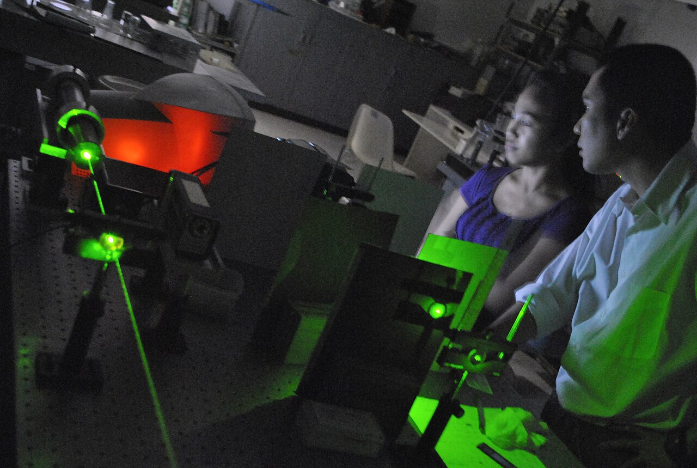
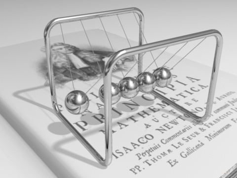
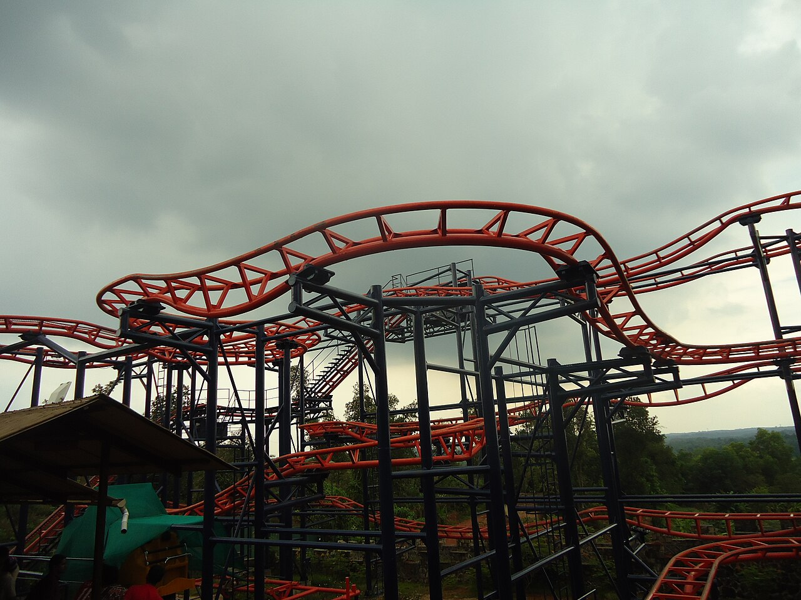
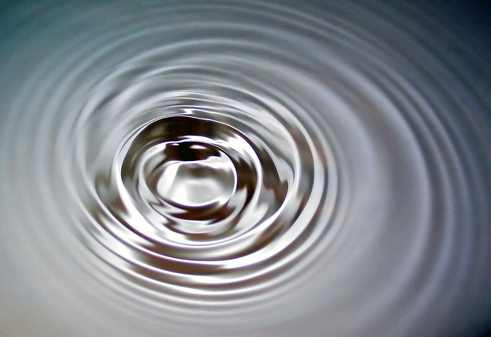
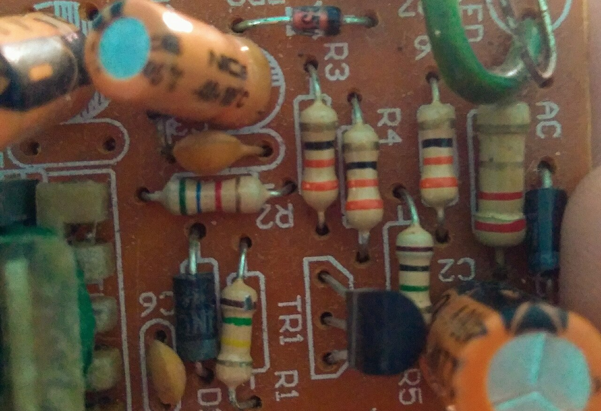

Magnitudes básicas
Toda medición física parte de magnitudes fundamentales del Sistema Internacional (SI):
- Longitud — metro (m)
- Masa — kilogramo (kg)
- Tiempo — segundo (s)
- Temperatura — kelvin (K)
- Intensidad de corriente — ampere (A)
Conceptos, fórmulas y temas fundamentales
La física es la ciencia que estudia la materia, la energía, el movimiento y las fuerzas que actúan en el universo. Es una de las ciencias naturales más antiguas y sirve de base para la química, la biología, la ingeniería y la astronomía.

Toda medición física parte de magnitudes fundamentales del Sistema Internacional (SI):
La cinemática describe el movimiento de los cuerpos sin considerar las causas que lo producen. Estudia posición, velocidad y aceleración.
Velocidad constante, aceleración nula.
v = d / t
d = v · t
Donde v = velocidad, d = distancia, t = tiempo.
Aceleración constante en el tiempo.
vf = vi + a · t
d = vi · t + ½ · a · t²
vf² = vi² + 2 · a · d
Donde a = aceleración, vi = velocidad inicial, vf = velocidad final.
| Magnitud | Símbolo | Unidad (SI) | Descripción |
|---|---|---|---|
| Posición | x | metro (m) | Ubicación respecto a un punto de referencia |
| Desplazamiento | Δx | metro (m) | Cambio de posición |
| Velocidad | v | m/s | Cambio de posición por unidad de tiempo |
| Aceleración | a | m/s² | Cambio de velocidad por unidad de tiempo |
La dinámica estudia las causas del movimiento: las fuerzas. Isaac Newton resumió sus principios en tres leyes fundamentales.

Un cuerpo permanece en reposo o en movimiento rectilíneo uniforme si la fuerza neta sobre él es cero.
ΣF = 0
La fuerza neta es proporcional a la masa y a la aceleración.
F = m · a
Unidad de fuerza: newton (N) = kg·m/s².
A toda acción corresponde una reacción de igual magnitud y dirección opuesta.
F₁→₂ = − F₂→₁
La energía es la capacidad de un cuerpo para realizar trabajo. Se conserva: no se crea ni se destruye, solo se transforma.

W = F · d · cos θ
Se mide en joules (J).
Energía asociada al movimiento.
Ec = ½ · m · v²
Energía asociada a la altura.
Ep = m · g · h
Sin rozamiento, la energía mecánica total se mantiene constante.
Ec + Ep = constante
Rapidez con que se realiza un trabajo.
P = W / t
Se mide en watts (W).
Estudia el calor, la temperatura y las transformaciones de la energía en los sistemas.
Q = m · c · ΔT
Calor absorbido o cedido.
T(K) = T(°C) + 273.15
Conversión de temperatura Celsius a Kelvin.
ΔU = Q − W
Primera ley de la termodinámica.
Una onda es una perturbación que se propaga transportando energía, sin transportar materia.

v = λ · f
Donde λ = longitud de onda, f = frecuencia, v = velocidad.
T = 1 / f
T = periodo.
Estudia las cargas eléctricas, las corrientes y los campos magnéticos, así como su interacción.

V = I · R
V voltaje (V), I corriente (A), R resistencia (Ω).
P = V · I
P = I² · R
Fuerza entre dos cargas puntuales.
F = k · q₁ · q₂ / d²
k ≈ 9 × 10⁹ N·m²/C².
Elige una fórmula, ingresa los valores y obtén el resultado al instante.